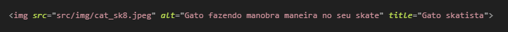
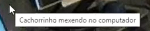
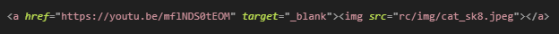

Imagens

img ← Precisa do atributo com o valor do caminho da imagem que queremos carregar seja ele um arquivo no computador ou uma URL externa
- src=”Caminho/Pastas/Arquivo-de-imagem.formato”
- Para carregar uma imagem do computador
- src=“URL”
- Para carregar uma imagem externa
- alt=”Texto que deve aparecer quando uma imagem não for encontrada ”
- Bom para leitores de tela e aumenta a acessibilidade da sua pagina
- Title=”Texto que vai aparecer quando o ponteiro ficar em cima da imgem”
- 
- DICAS PARA ORGANIZÇÃO:
- Dentro da pagina na raiz criar uma pasta src onde vamos colocar todos os arquivos de css e nossas imagens
- VsCode permite que você arraste uma imagem para dentro da pasta
- No site place holder tem links para imagens de marcação de diversos tamanhos e formatos para que você use enquanto não tem as imagens finais
Da de colocar a tag img no lugar do texto quando for criar links

Retornar